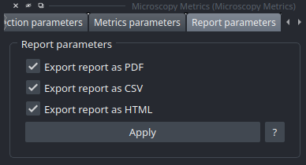

Outputs
At the end of the analysis, the plugin generates multiple visual and data outputs to help users understand, evaluate, and interpret the results. These outputs provide comprehensive insights into the Point Spread Function (PSF) analysis and facilitate further data processing.
Napari Viewer
- The Napari interface is dynamically updated to display real-time visualizations of the analysis results:
Detected Beads and ROIs: All detected beads and their corresponding Regions of Interest (ROIs) are visualized directly in the Napari viewer.
Fitting Display: Computed fitting results are displayed in the “Metrics Parameters” widget, enabling interactive exploration.
- 3D Visualizations:
Mesh Representation: 3D mesh of the bead to visualize its shape and structure.
Skeleton Representation: Simplified view of the PSF structure for easier analysis.
Curvature Visualization: Assessment of the skeleton’s curvature.
{kind=link}

HTML File
- For enhanced interaction, users can double-click on a detected ROI in the Napari viewer to open a detailed web report for the selected bead, including:
Bead Position: Coordinates and visual representation in the image.
Fit Curves: Graphical representation of the fitting results.
Multi-Axis Views: Visualization from all axes (X, Y, Z).
Calculated Metrics: All derived analysis metrics.
Heatmaps: Visual representation of bead properties.
PDF File
- A comprehensive PDF report is generated, containing:
Global Analysis Summary: Overview of the entire analysis.
Individual Bead Reports: Detailed results for each bead, including all elements from the HTML report (position, fit curves, multi-axis views, metrics, and heatmaps).
CSV File
A CSV file is generated, containing only the numerical metrics for each bead. This file is ideal for further data processing or statistical analysis in tools like Excel, Python, or R.
Note
The CSV format allows for easy integration with data analysis workflows and custom visualization tools.